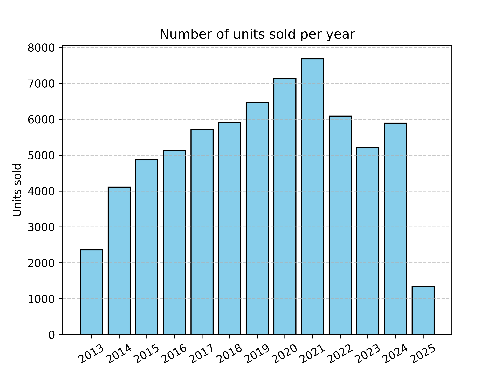
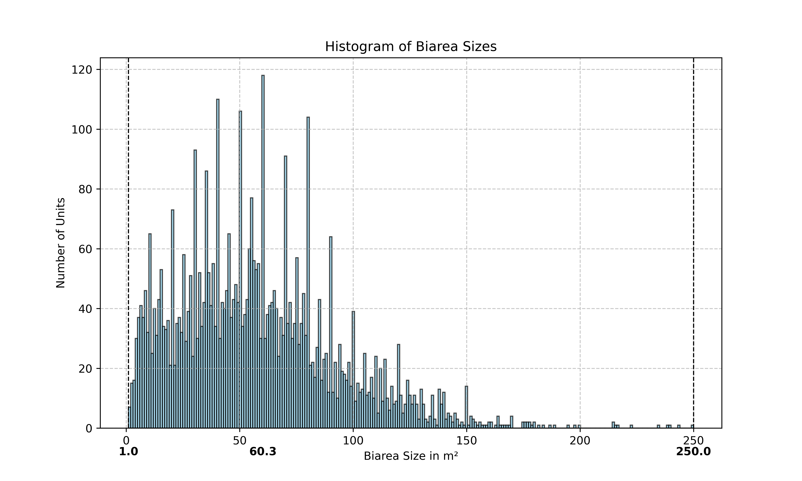
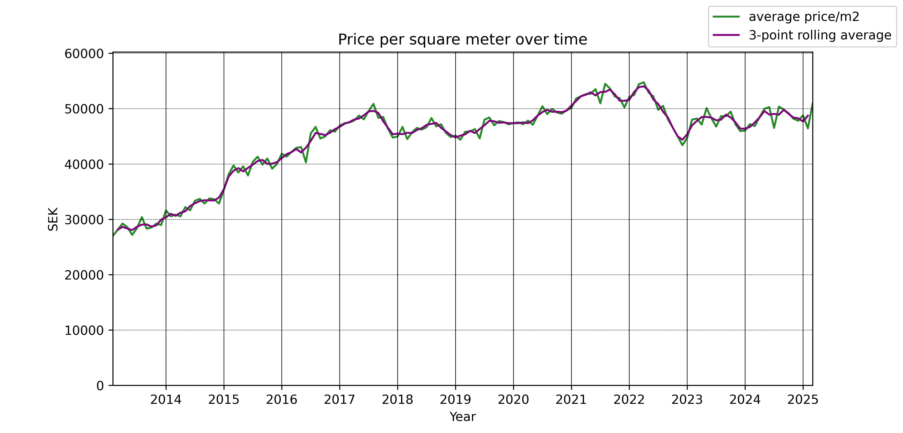
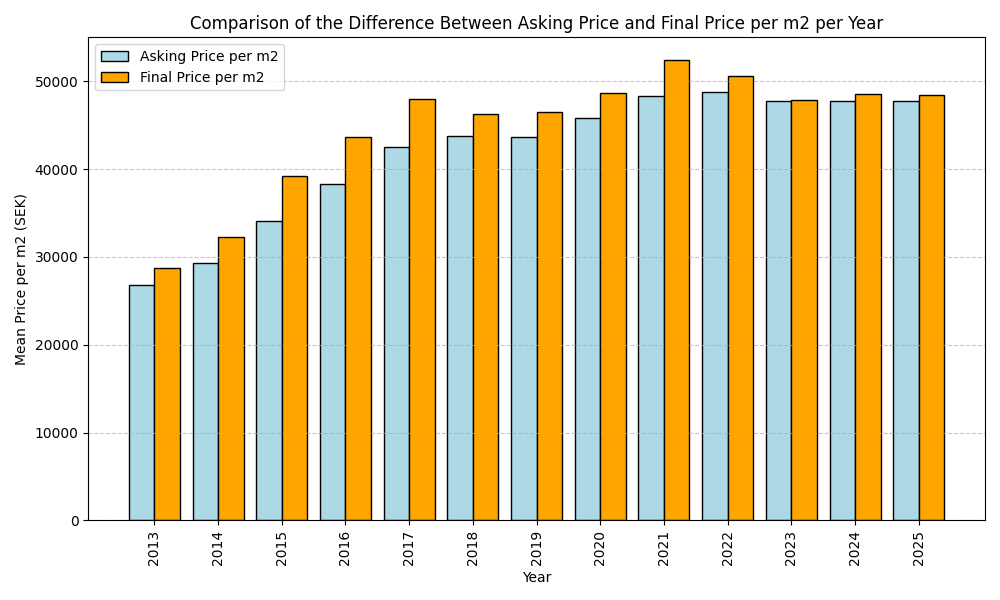
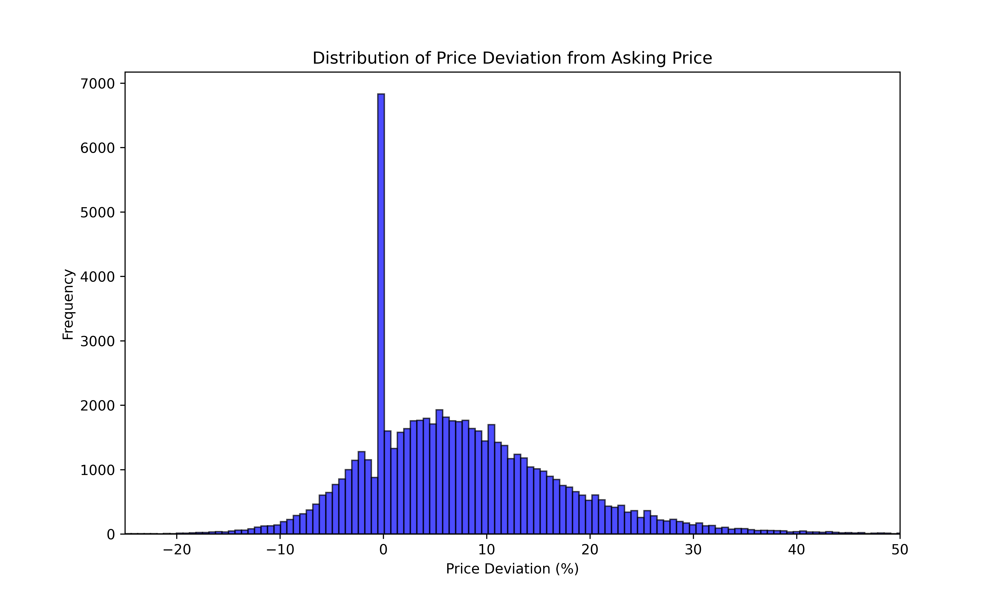

Housing Market in Gothenburg
April 1st 2025
In an effort to try and estimate what my apartment is worth, I ended up writing a crawler that scraped together all historical sales data from Sweden's largest real estate listing website. Sometimes I read reports of how the housing market is doing etc, but I always think that I'd like to see the actual data for myself, and perhaps for a specific area.
Before we look at the plots of all that data, here is a plot plotting KPI (Swedens key inflationary index) against the reference interest rate set by the Swedish Riksbank. The key takeaway is that the past 3-4 years have been subjected to a very high inflation, leading to Riksbanken raising the reference interest rate. This in turn affects property prices. This is the reason for some of the drastic fluctuations in the following graphs for the past three years.
While the plot is rendered by me, the data is collected from SCB and Sveriges Riksbank.

About the data
So, from the Gothenburg area alone, I got my hands on some 70000 datapoints. If we break it down by how many properties sold by year, we get this graph
If we break the data down into different types of properties, we get this graph

We see that a vast majority of sales are consistently apartments. I guess that this is the case for any big city (Gothenburg is big by Swedish standards!). To gather so many people in the same area there has to be a large number of apartments, as they are much more space efficient (efficient as in, number of people that can live on the same area of land).
These labels come from the collected data and are not chosen by me. if we render the data without apartments, we can more clearly see what other properties are being sold.

It seems that house sales are relatively stable. Interestingly, the label for TWIN_HOUSE looses popularity after 2018 and is replaced by ROW_HOUSE. I guess that I agree that a twin house is also a row house, with a row length of 2. I suspect that these categories are input by the realtors who put the ads online, so there are bound to be inconsistencies. ROW_HOUSE doesn't appear in the dataset before 2019, and when it was added it seems that realtors favored it over TWIN_HOUSE straight away.
How big are the properties that have sold in Gothenburg? Property sizes are measured in square meters. If we plot them as a histogram, we get this plot

Each bar represents not a single, discrete size, but rather a range. In this case, each bar represents a 1.71 m2 range, so the peak of 54.8 m2 actually refers to the range of apartments that spans from 54.8 m2 to 56.51 m2. While I expected a histogram with a clear peak, I did not expect a particular bar to stand out like these. Some takeaways
The most common size of apartment that was sold in Gothenburg in the past 12 years have been in the range 54.8 to 56.51 m2
The clear majority of properties sold are less than 100 m2
The smallest property that sold was only 6 m2, while the largest property that sold was 434 m2
Looking more closely at the datapoint for the 6 m2 sale, it is a 'Sjöbod' that was sold in 2014 for 795 000:-. A sjöbod is used to store fishing equipment and other boating gear.
Rendering the number of rooms as a histogram, we get this plot

It becomes clear that the two most common room counts for sold properties are 2 and 3 rooms. Interestingly, there is one property in the data set that had 42 listed rooms. When I look closer at this one specific data point, it is actually a 42 m2 apartment in central Gothenburg. It seems as if the realtor put the numbers in wrong. 42 m2 indicates that this is most likely a 1 or 1.5 room apartment, or a very small 2 room apartment.
Given that apartment sales make up a large proportion of the data, some plots are interesting to view without them. Below are two plots showing only data for the HOUSE category.


Some takeaways
The mean house size is between 134.7 and 136.3 m2
House sizes are more evenly distributed, yielding a much cleaner histogram
The smallest house that sold was only 24 m2, while the largest house that sold was 434 m2
The most common number of rooms in the houses sold have been 5 and 6, with the largest room count being 16
Looking more closely at the datapoint for the 16-room house, I see that it is a house in Göteborg (close to Johanneberg) that sold in January of 2021 (for 11 500 000:- SEK!). It has 317 m2 of living area, and yet another 143 m2 of biarea. Biarea is a Swedish word to describe space in a property that does not fulfill the critera to be considered living space. Biarea has the same requirements of standard as regular living area concerning height requirements and acessibility. Examples of biarea are any area that is below ground level (such as a basement), a garage, area underneath a slanted roof, etc. While not strictly living area, it is usually still useful space. A histogram over biarea sizes for the HOUSE category follows below
There is a spread of sizes, with a few interesting peaks. I don't know why these peaks exist, but I guess that they are because of detailed plans. Certain neighborhoods have requirements of how buildings must look, and that might give rise to a high number of buildings in a small area that look pretty much identical. Perhaps this could be a reason.
The largest biarea is 250 m2, and belongs to a house in Hovås (expensive area!). The house has 152 m2 of living area, and another 250 m2 of biarea. It sold in 2024 for 9 200 000:- SEK. Since the sale is so fresh the schematics are still available, and it appears as if the house has a huge, furnished basement.
Since the majority of sold properties are apartments, it is interesting to see how their fees have changed over time. When you buy an apartment in Sweden you usually don't actually buy the apartment. You buy a share in a tenants association, and your share comes with the right to access and use a specific unit. The tenant association owns the building and is responsible for its upkeep and maintenance (including outside areas, common areas, laundry rooms, etc), while you generally own and care for 'ytskiktet' in your unit. As an example, the tenant union owns and are responsible for the plumbing, while you are responsible for the toilet.
In order for the tenant association to be able to operate, members of the tenant association pay a monthly fee. This fee, and the cost of the mortgage, make up your monthly costs. A tenant association will very often take out loans to do work on the buildings, and very few of them are completely free of debt. If you don't have a mortgage, you are not sensitive to changes in interest rates. However, you may still indirectly be sensitive to them through your tenant association. If the rates on the loans of the tenants association increase, they are often required to raise the monthly fee. We plot how the average monthly fee has changed over time

In the past three years we see that the mean tenants assocition fee has incrased by maybe 15%, in step with the rising interest rates and inflation. Not surprising, but very interesting to observe.
Prices
Given the heterogeneity or the data, how can we easilly draw conclusions of prices over time? I believe that the sheer size of the dataset alone will be enough to observe trends over time, without accounting for different sizes, property types, etc. If I plot the monthly mean price mer m2, we get this graph
There appears to have been a very nice steady increase in prices from 2013 and onwards. This is something that I myself remember from when I bought my apartment in 2017. In mid 2017 there started to be concerns about whether we were in a housing bubble or not. This had some effect on property prices, but after the initial worry prices started increasing slowly again. The pandemic seems to have had a negligible effect on prices in Gothenburg, but Putins invasion of Ukraine and the subsequent inflation crisis really did a number.
If we instead of rendering the prices on a month to month basis render them on a year by year basis, we get this bar graph

The change looks less dramatic as a result of averaging the results over more time. It is still incredible, however, that in 2014 the average price per m2 was some 32 000:- SEK, and just the next year it was more than 39 000:-. An increase of over 20%!
The dataset contains information about both asking price and final price. In Sweden, it is the norm that there's a bidding 'war'. As properties goes up for sale, one or two public showings are had, after which people submit their offers. Each interested party is assigned a unique ID, and only the realtor can map an ID to an individual. The bidding takes place in the open where you can observe which ID bid how much. When you've won the auction, but before you sign the contract, you are allowed to request a complete list of bids, with the names of the bidders. You can confirm with them that their bids were legitimate if you so wish, but I don't believe planted bidders are common in Sweden.
Now, how much does the final price deviate from the asking price? If we plot the mean difference as a bar graph, showing the difference every year, we get this graph
In every year that we have data, the final prices have always been higher than the asking prices. Only recently have the difference shrunk, and in 2023 it was almost negative. In 2015, 2016, and 2017 the difference was enormus.
So, the mean property seller sells a property for more than what they asked for. What does all these differences look like as a histogram?
Some takeaways
The most common deviation from asking price is 0%, meaning that the property sold for what was asked for
The majority of properties sell for more than what was asked for (but we already knew this from the previous plot)
If we disregard the peak at 0%, it appears as if the most common difference in final and asking price is 6%
Some properties sold for almost 50% more than what they were listed for, and some sold for almost 20% less than what was asked for
Normalising the price per m2 against the median salary in Sweden for the same years, we get this plot

Notice that I couldn't find the median salary for 2013, 2024, and 2025. The numbers for 2024 should be available soon, as it is now tax declaration season in Sweden.
Some takeaways
The shape of the plot is very similar to that of the plot without the prices normalised (price per m2 per year)
This confirms that the prices of properties actually increase or decrease from year to year, as opposed to attributing the price changes to the change in median salary
All in all, I had a good amount of fun looking at these plots, and I am certain that my apartment is not worth today what I paid for it in 2017. Let me know if there is some alternative rendering of the data that you think would be interesting to see, and I'll add it.
The code for most plots were generated using ChatGPT, after which I applied some final touches to it.

{kind=link}
{kind=link}
{kind=link}
{kind=link}
{kind=link}